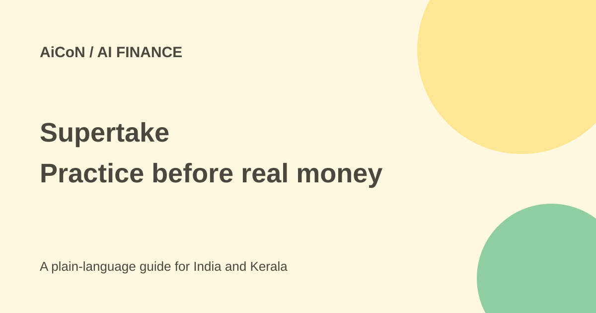

Supertake: free beta, Practice Mode and trading risks
Supertake can turn a written investment idea into a portfolio. Its free private beta does not make real trading free of cost or risk.

Union Square Ventures introduced Supertake on 28 September 2026 as a product incubated inside the firm. You write a belief in plain language, and AI generates a portfolio idea. The launch says it can manage and rebalance that idea daily, with direct user approval or an optional Autopilot mode.
The launch says current support is for public US-listed equities. Crypto, derivatives and prediction markets are described as future additions. A crypto-related theme on the public leaderboard does not prove that direct cryptocurrency trading is currently supported.
The official launch says the product is 100% free during private beta. The live homepage still says invite-only and offers a waitlist using X. Joining a waitlist is not immediate access. The checked terms say Supertake does not currently accept compensation for its investment-related functionality; pricing can change.
A free software beta is separate from investment capital, brokerage charges, taxes, execution costs and losses. There is no verified permanent free tier or future paid price in these sources. Do not read "free" as a promise that all trading costs disappear.
The terms describe Practice Mode as simulated funds. It needs no brokerage connection, sends no trade instructions and buys no actual assets for you. It is a way to examine an idea without putting money behind it.
Simulation does not reproduce every real-world problem. The terms mention fees, taxes, liquidity, execution and behaviour when actual money is at risk. Practice results can differ greatly from real results. Published performance can be simulated, and Supertake says it does not verify or audit users' performance information.
The launch names Robinhood and Coinbase as examples. The current terms specifically describe a Robinhood account link through OAuth, with other brokers potentially supported later. Do not assume the broader launch examples are a complete list of working integrations.
The link can read positions and account information and send orders into a designated Robinhood agentic account. Autopilot can transmit trades without approval for each trade, within the dollar cap and other parameters set at activation. Turning it off or revoking the link ends future authority, but cannot cancel or reverse an order already transmitted to and accepted by the broker.
The sources checked do not settle Indian-resident eligibility or supported Indian brokers. The terms require users to be at least 18. An accessible website or waitlist is not proof that a reader can open the required brokerage account or trade through the service. Check eligibility with the service and broker rather than assuming an Indian account works.
- Read the official launch, current terms and privacy policy.
- Confirm beta access and age requirements.
- Use Practice Mode first if available to your account.
- Check whether a displayed result is practice or actual trading.
- Before any real-money connection, understand broker eligibility, access permissions, costs and how to revoke access.
- Do not enable automatic trading merely because an AI-generated explanation sounds confident.
The privacy policy covers account information and data sharing with service providers. Brokerage access exposes financial information. Published ideas can be viewed, shared and forked by others. Do not publish private financial details as part of a take.
Supertake says it is not currently a broker-dealer or registered investment adviser. AI output can be inaccurate, incomplete or outdated. The software does not guarantee returns, and investments can lose some or all of their value.
This guide adds the free-beta statement and the safer no-broker Practice Mode. It also narrows verified brokerage details to the current terms and distinguishes current US equities from future asset types.
Its documented funds and trades are simulated.
Yes, within the parameters you authorise.
No. They may be simulated and are not audited by Supertake.
Sources: Official USV introduction · Live waitlist and disclosures · Terms and Practice Mode · Privacy policy. Checked 7 October 2026.